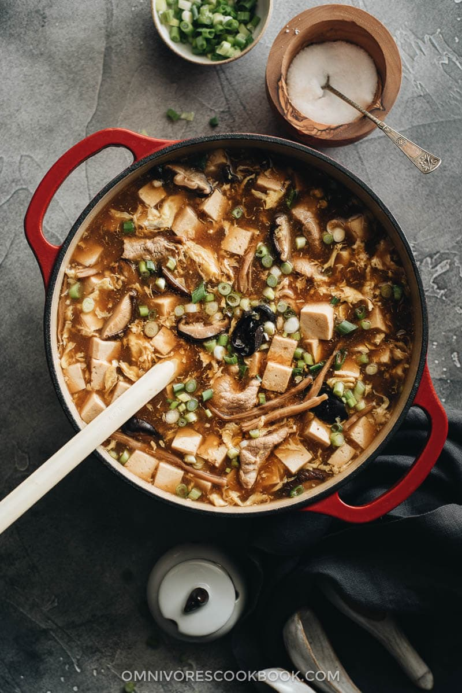
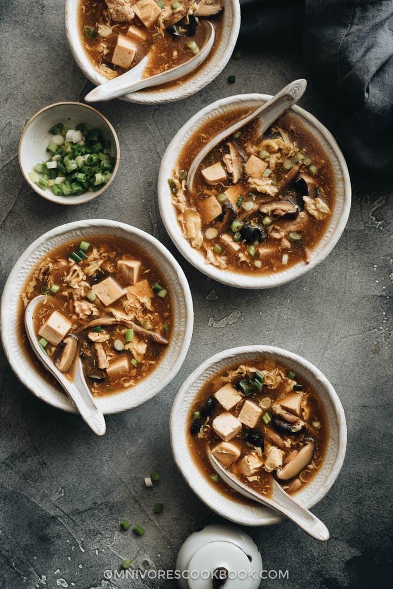
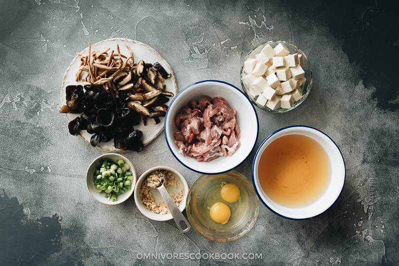
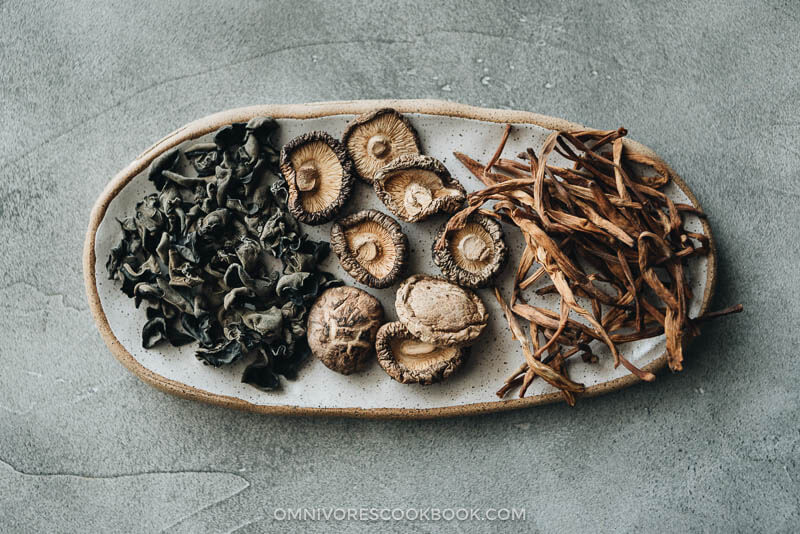
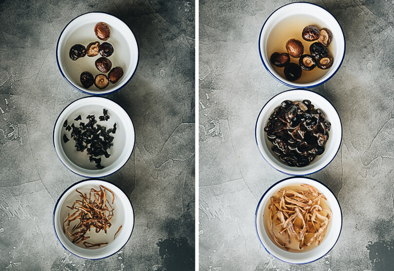
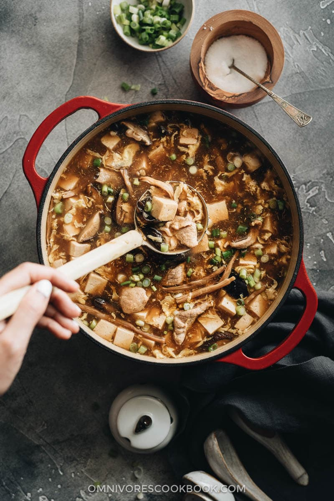

Chinese restaurant-style hot and sour soup made easy! The hearty, spicy, sour broth is loaded with mushrooms, silky eggs, and tofu. I’ve included lots of notes so you can tweak the recipe with the ingredients you have on hand, plus how to make this dish vegetarian. {Vegetarian adaptable}

Hot and sour soup is such a popular dish takeout dish, along with egg drop soup and wonton soup. It’s one of those things that we almost always order when eating in a restaurant. The soup is loaded with so many goodies that I totally wouldn’t mind serving it as a main dish for a light dinner.

Did you know that hot and sour soup is actually super easy to make?
Yes, the recipe below might look a bit long, because I wanted to create a proper restaurant-style hot and sour soup for you. But in fact, the soup base requires only a few ingredients:
That’s it!
The sourness of the soup comes from the Chinkiang vinegar. And the spiciness comes from the white pepper powder. No peppers or chili oil required!

My recipe uses some dried ingredients that might require a trip to an Asian market or a purchase on Amazon. But if you don’t want to make the extra effort, you can totally skip these ingredients. I will explain why.
I previously discussed how to use Chinese dried veggies to create a superior flavor in another recipe – Buddha’s Delight, a Jai (Buddhist vegetarian) dish. The logic is the same here. The foundation of the broth consists of dried lily flowers and dried shiitake mushrooms. They both have a very concentrated smoky, earthy, and woody aroma. Once you rehydrate them, the rehydrating water will turn a dark brown color as it becomes infused with the great flavor. Do not throw this water away. It is the best vegan broth and you should use it to make the soup base.
The other dry ingredient is wood ear mushrooms. It is a mildly flavored fungus that adds a crunchy texture to the dish.

Chinese families always have these ingredients on hand because they allow a cheaper and healthier way to create a flavorful broth. If you use these ingredients, your soup will turn out more like the Chinese restaurant version.
However, if you do not have these ingredients, simply skip them and use chicken stock or vegetable stock instead of water to make your soup.

Simply skip the “marinate” part of the recipe, including the pork and the few ingredients for the marinade. Many Chinese recipes use a small amount of meat to add volume and texture to the dish. Skipping the meat won’t affect the flavor of the soup.
There are so many more ingredients that work well in this dish.
For example, some of my favorite vegetables include – tomatoes, napa cabbage, bamboo shoots, mushrooms, and bok choy.
You can also use a different type of protein to replace the pork. For example, chicken or shrimp would work great. You can even throw in a few slices of cooked sausage or ham to make the cooking faster.
Add vinegar and white pepper at the end of cooking – this is very important. Otherwise the pureness of the vinegar will disappear as the vinegar evaporates and the white pepper will release a bitter taste if heated for too long.

Chinese restaurant-style hot and sour soup made easy! The hearty, spicy, sour broth is loaded with mushrooms, silky eggs, and tofu. I’ve included lots of notes so you can tweak the recipe with the ingredients you have on hand, plus how to make this dish vegetarian. {Vegetarian adaptable}